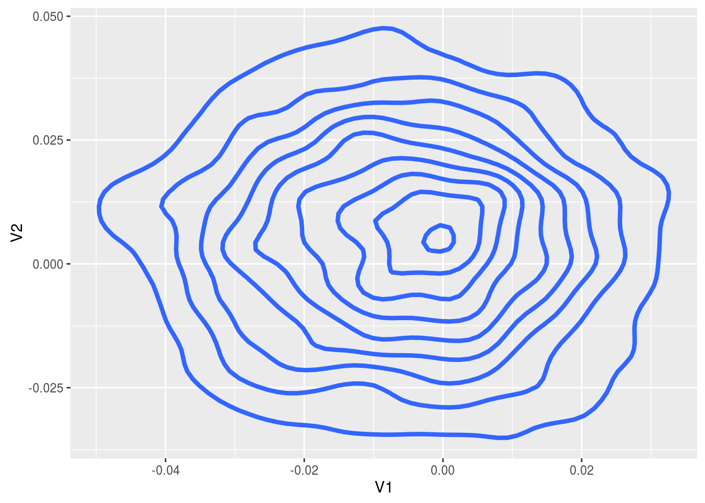

In this example we use the package to infer the mean of a 2d Gaussian using stochastic gradient Langevin dynamics. So we assume we have iid data \(x_1, \dots, x_N\) with \(x_i | \theta \sim N( \theta, I_2 )\), and we want to infer \(\theta\).
First let’s simulate the data with the following code, we set \(N\) to be \(10^4\)
library(sgmcmc)
library(MASS)
# Declare number of observations
N = 10^4
# Set theta to be 0 and simulate the data
theta = c( 0, 0 )
Sigma = diag(2)
X = mvrnorm( N, theta, Sigma )
dataset = list("X" = X)In the last line we defined the dataset as it will be input to the relevant sgmcmc function. A lot of the inputs to functions in sgmcmc are defined as lists. This improves flexibility by enabling models to be specified with multiple parameters, datasets and allows separate tuning constants to be set for each parameter. We assume that observations are always accessed on the first dimension of each object, i.e. the point \(x_i\) is located at X[i,] rather than X[,i]. Similarly the observation \(i\) from a 3d object Y would be located at Y[i,,].
The parameters are declared very similarly, but this time the value associated with each entry is its starting point. We have one parameter theta, which we’ll just start at 0.
params = list( "theta" = c( 0, 0 ) )Now we’ll define the functions logLik and logPrior. It should now become clear why the list names come in handy. The function logLik should take two parameters as input: params and dataset. These parameters will be lists with the same names as those you defined for params and dataset earlier. There is one difference though, the objects in the lists will have automatically been converted to TensorFlow objects for you. The params list will contain TensorFlow tensor variables; the dataset list will contain TensorFlow placeholders. The logLik function should take these lists as input and return the value of the log likelihood as a tensor at point params given data dataset. The function should do this using TensorFlow operations, as this allows the gradient to be automatically calculated; it also allows the wide range of distribution objects as well as matrix operations that TensorFlow provides to be taken advantage of. A tutorial of TensorFlow for R is beyond the scope of this article, for more details we refer the reader to the website of TensorFlow for R. With this in place we can define the logLik function as follows
logLik = function( params, dataset ) {
# Declare Sigma as a Tensorflow object
Sigma = tf$constant( c(1, 1), dtype = tf$float32 )
# Declare distribution of each observation
baseDist = tf$contrib$distributions$MultivariateNormalDiag( params$theta, Sigma )
# Declare log likelihood function and return
logLik = tf$reduce_sum( baseDist$log_prob( dataset$X ) )
return( logLik )
}So this function basically states that our likelihood is \(\sum_{i=1}^N \log \mathcal N( x_i | \theta, I_2 )\), where \(\mathcal N( x | \mu, \Sigma )\) is a Gaussian density at \(x\) with mean \(\mu\) and variance \(\Sigma\). R does not play nicely with the tensorflow type system, so make sure you set all your constants in the logLik and logPrior functions to tf$float32, as we have done. Otherwise you will encounter an error.
Next we want to define our log prior, which we assume is \(\log p( \theta_j ) = \mathcal N(\theta_j | 0,10)\), for each dimension \(j\) of \(\theta\). Similar to logLik, logPrior is defined as a function with input params. In our case the definition is
logPrior = function( params ) {
baseDist = tf$contrib$distributions$Normal( 0, 10 )
logPrior = tf$reduce_sum( baseDist$log_prob( params$theta ) )
return( logPrior )
}Again make sure you set all your constants inside the function to tf$float32, as we have done. Similarly we can just use Normal rather than tf$contrib$distributions$Normal.
Before we begin running our SGLD algorithm, we need to specify the stepsize and minibatch size. A stepsize is required for each parameter, so this must be a list of numbers with names that are exactly the same as each of the parameters. The minibatch size is simply a number that is less than \(N\). It specifies how many observations are used in each iteration of SGMCMC, it is a trade off between accuracy and speed.
stepsize = list( "theta" = 1e-5 )
n = 100The stepsize parameters may require a bit of tuning before you get good results.
Now we can run our SGLD algorithm using the sgmcmc function sgld, which returns a list of Markov chains for each parameter as output. Use the argument verbose = FALSE to hide the output of the function
chains = sgld( logLik, logPrior, dataset, params, stepsize, n, nIters = 10^4 )## Iteration: 100 Log posterior estimate: -29132.224609375
## Iteration: 200 Log posterior estimate: -27495.86328125
## Iteration: 300 Log posterior estimate: -28135.849609375
## Iteration: 400 Log posterior estimate: -28377.90625
## Iteration: 500 Log posterior estimate: -28584.4765625
## Iteration: 600 Log posterior estimate: -28342.23046875
## Iteration: 700 Log posterior estimate: -28199.421875
## Iteration: 800 Log posterior estimate: -27510.453125
## Iteration: 900 Log posterior estimate: -30138.533203125
## Iteration: 1000 Log posterior estimate: -27993.458984375
## Iteration: 1100 Log posterior estimate: -29054.13671875
## Iteration: 1200 Log posterior estimate: -29917.896484375
## Iteration: 1300 Log posterior estimate: -28042.978515625
## Iteration: 1400 Log posterior estimate: -28491.283203125
## Iteration: 1500 Log posterior estimate: -29118.98046875
## Iteration: 1600 Log posterior estimate: -27737.50390625
## Iteration: 1700 Log posterior estimate: -26804.001953125
## Iteration: 1800 Log posterior estimate: -27726.609375
## Iteration: 1900 Log posterior estimate: -29396.37890625
## Iteration: 2000 Log posterior estimate: -28816.09375
## Iteration: 2100 Log posterior estimate: -28005.748046875
## Iteration: 2200 Log posterior estimate: -27858.228515625
## Iteration: 2300 Log posterior estimate: -28442.984375
## Iteration: 2400 Log posterior estimate: -27696.310546875
## Iteration: 2500 Log posterior estimate: -29765.48828125
## Iteration: 2600 Log posterior estimate: -27940.353515625
## Iteration: 2700 Log posterior estimate: -28545.125
## Iteration: 2800 Log posterior estimate: -29218.068359375
## Iteration: 2900 Log posterior estimate: -29360.7890625
## Iteration: 3000 Log posterior estimate: -28341.087890625
## Iteration: 3100 Log posterior estimate: -28041.44140625
## Iteration: 3200 Log posterior estimate: -28820.41796875
## Iteration: 3300 Log posterior estimate: -27270.224609375
## Iteration: 3400 Log posterior estimate: -28942.55859375
## Iteration: 3500 Log posterior estimate: -27572.958984375
## Iteration: 3600 Log posterior estimate: -28408.59765625
## Iteration: 3700 Log posterior estimate: -27543.9609375
## Iteration: 3800 Log posterior estimate: -28605.91796875
## Iteration: 3900 Log posterior estimate: -27763.869140625
## Iteration: 4000 Log posterior estimate: -29237.990234375
## Iteration: 4100 Log posterior estimate: -29186.748046875
## Iteration: 4200 Log posterior estimate: -31054.599609375
## Iteration: 4300 Log posterior estimate: -29561.890625
## Iteration: 4400 Log posterior estimate: -27302.34765625
## Iteration: 4500 Log posterior estimate: -28128.6484375
## Iteration: 4600 Log posterior estimate: -28829.6328125
## Iteration: 4700 Log posterior estimate: -26507.158203125
## Iteration: 4800 Log posterior estimate: -29305.27734375
## Iteration: 4900 Log posterior estimate: -29021.40234375
## Iteration: 5000 Log posterior estimate: -28263.21484375
## Iteration: 5100 Log posterior estimate: -27392.328125
## Iteration: 5200 Log posterior estimate: -27422.232421875
## Iteration: 5300 Log posterior estimate: -25983.103515625
## Iteration: 5400 Log posterior estimate: -30587.515625
## Iteration: 5500 Log posterior estimate: -30006.693359375
## Iteration: 5600 Log posterior estimate: -27169.8046875
## Iteration: 5700 Log posterior estimate: -27128.3125
## Iteration: 5800 Log posterior estimate: -29159.166015625
## Iteration: 5900 Log posterior estimate: -30731.62109375
## Iteration: 6000 Log posterior estimate: -29070.68359375
## Iteration: 6100 Log posterior estimate: -28653.55078125
## Iteration: 6200 Log posterior estimate: -27818.89453125
## Iteration: 6300 Log posterior estimate: -26546.830078125
## Iteration: 6400 Log posterior estimate: -28273.935546875
## Iteration: 6500 Log posterior estimate: -28445.8046875
## Iteration: 6600 Log posterior estimate: -32408.53125
## Iteration: 6700 Log posterior estimate: -29353.578125
## Iteration: 6800 Log posterior estimate: -29140.26953125
## Iteration: 6900 Log posterior estimate: -27007.001953125
## Iteration: 7000 Log posterior estimate: -27182.79296875
## Iteration: 7100 Log posterior estimate: -29511.87890625
## Iteration: 7200 Log posterior estimate: -27325.677734375
## Iteration: 7300 Log posterior estimate: -28987.515625
## Iteration: 7400 Log posterior estimate: -27277.5859375
## Iteration: 7500 Log posterior estimate: -28591.76171875
## Iteration: 7600 Log posterior estimate: -28871.7265625
## Iteration: 7700 Log posterior estimate: -29701.60546875
## Iteration: 7800 Log posterior estimate: -28688.91015625
## Iteration: 7900 Log posterior estimate: -28807.990234375
## Iteration: 8000 Log posterior estimate: -28207.853515625
## Iteration: 8100 Log posterior estimate: -27272.32421875
## Iteration: 8200 Log posterior estimate: -30326.83203125
## Iteration: 8300 Log posterior estimate: -28426.634765625
## Iteration: 8400 Log posterior estimate: -26190.626953125
## Iteration: 8500 Log posterior estimate: -26835.26171875
## Iteration: 8600 Log posterior estimate: -29558.064453125
## Iteration: 8700 Log posterior estimate: -27804.6484375
## Iteration: 8800 Log posterior estimate: -29027.94921875
## Iteration: 8900 Log posterior estimate: -28790.54296875
## Iteration: 9000 Log posterior estimate: -29882.115234375
## Iteration: 9100 Log posterior estimate: -29288.083984375
## Iteration: 9200 Log posterior estimate: -28271.916015625
## Iteration: 9300 Log posterior estimate: -27590.671875
## Iteration: 9400 Log posterior estimate: -27272.388671875
## Iteration: 9500 Log posterior estimate: -28742.748046875
## Iteration: 9600 Log posterior estimate: -27337.96875
## Iteration: 9700 Log posterior estimate: -26544.828125
## Iteration: 9800 Log posterior estimate: -28842.2890625
## Iteration: 9900 Log posterior estimate: -29067.71875
## Iteration: 10000 Log posterior estimate: -27802.4453125Finally we’ll plot the results after removing burn-in
library(ggplot2)
burnIn = 10^3
thetaOut = as.data.frame( chains$theta[-c(1:burnIn),] )
ggplot( thetaOut, aes( x = V1, y = V2 ) ) +
stat_density2d( size = 1.5 )
There are lots of other sgmcmc algorithms implemented that can be used by simply changing the tuning parameters slightly including sghmc and sgnht; as well as their control variate counterparts for improved efficiency.